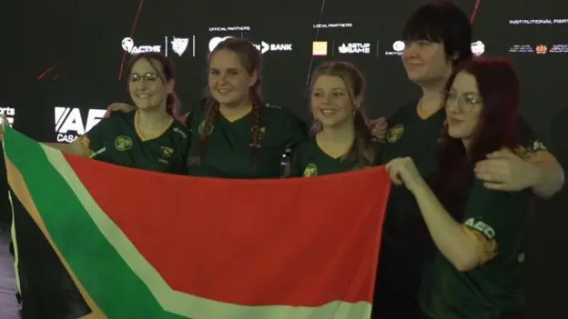

The world of sports has always transcended borders, cultures, and languages, connecting people through shared passions and competition. Today, as technology continues to evolve, a new dimension of sports is rising globally—e-sports. This new frontier, defined by competitive video gaming, has taken the world by storm, attracting millions of fans, high-profile sponsors, and massive prize pools. Although still emerging, Africa’s e-sports scene is becoming a vibrant space with vast potential for growth. As connectivity improves and the youth population grows, African nations are actively participating in the global digital gaming revolution, finding innovative ways to overcome challenges and make a mark on the e-sports stage.
Thematic:
This article explores the journey of e-sports in Africa, looking at both the promise it holds and the challenges it faces. It delves into themes such as the rise of local talent, the role of government and private sectors, infrastructure development, and the impact on Africa’s youth and job market.
The Rise of Local E-Sports Talent
One of the most promising aspects of Africa's e-sports scene is the rise of local talent. Across the continent, young gamers have gained recognition in international tournaments, demonstrating that African players can compete at the highest levels. Countries like South Africa, Egypt, Nigeria, and Kenya are leading the way, with players excelling in games like FIFA, Fortnite, Dota 2, and PUBG. Gaming organizations and community events have sprung up, such as South Africa’s Mettlestate, and Nigerian e-sports initiatives like Gamr, which support and promote African players on international platforms.
Furthermore, the growth of content creation platforms, such as Twitch and YouTube Gaming, has given African players a chance to showcase their skills, gain sponsorships, and inspire other young people across the continent.
Infrastructure and Connectivity: Paving the Way Forward
A core challenge for African e-sports is the infrastructure gap, specifically regarding reliable internet connectivity and access to gaming hardware. High latency and low internet speeds are obstacles that hinder African gamers from performing competitively on international servers. However, there are positive developments in this area. Efforts by tech giants, local ISPs, and governments to expand fiber-optic networks and offer more affordable data packages have made a difference in recent years.
Moreover, companies like Liquid Telecom and MainOne are investing heavily in infrastructure projects to bring stable internet connections to more communities. Mobile gaming is also an expanding field, as smartphone penetration continues to rise, and companies like MTN and Vodacom are exploring partnerships to support gaming content, lower latency, and data access for mobile gamers.
E-Sports as a Career Path: Opportunities for Youth Employment
One of the most compelling aspects of e-sports is its potential to create employment opportunities. In a continent where the youth population is booming, yet formal employment opportunities can be limited, e-sports opens doors to new avenues such as gaming content creation, software development, streaming, and tournament organizing. Major e-sports tournaments like the African E-sports Championship offer prize pools that provide players with financial incentives and an opportunity to build their professional careers.
Organizations like the African Esports Association are working to formalize these pathways by establishing guidelines and regulations that can turn e-sports into a sustainable industry. Additionally, the increasing interest in gaming also attracts sponsorships from tech and entertainment brands, further boosting income prospects for both players and organizers.
Gaming’s star talent:

GIRLGAMER Esports Festival Champions
We have a very active gaming community here in Morocco, said Emmanuel Oyelakin, secretary general of the African Confederation of Digital Sports (ACDS), one of two organisations in charge of the event alongside the International Esports Federation (IESF).
Entertainment
This week in our entertainment section we shall present to you cooking steps of Okok so what is okok?? Okok is a traditional dish of the Beti people prepared with the leaves of Gnetum sp. and named it in the local language. The plant is called Ikok by the Bassa, Okok among the Beti; Hekok in the Banen, Eru in the Banyang, Ikiokio in the Yambassa, Kiwa in the Bafia, Koko in eastern Cameroon or Ekoke in the Douala1.
Igredients:
500 g okok chopped
2Kg palm nut
200g sugar(maximum)
salt
So how to cook that okok
Cook the palm nuts in a pot, taking care to put the well-packed okok or a water bath so that it is not in contact with the water;
After cooking the walnuts, put the okok to cool in a tray. For walnuts, they will be looted with a mortar and then mixed with water to extract the juice;
Pour the walnut juice into a pot, after boiling adds the peanut paste and lets it bake for about 20 minutes;
Meanwhile passes the okro crumpled to mortar and plunder until it has fine leaf particles;
Stirs the mixture of nuts and peanut from time to time and then adds the okok;
Leave to cook for 15 minutes;
Add the salt and sugar according to your convenience.
Your meal is ready you can eat it with cassava or cassava stick.
Conclusion:
E-sports in Africa is no longer a distant dream; it’s a budding industry with real potential to impact the continent’s youth, economy, and digital landscape. By nurturing local talent, investing in infrastructure, and fostering societal acceptance, Africa can unlock a new wave of opportunities in e-sports. This digital competition arena holds promise for transforming lives, connecting cultures, and giving Africa a competitive edge on the global stage.
The landmark HTML5, released in 2014, represented a major advancement. It standardized the way multimedia content like videos, audio, and animations could be embedded and played directly within web pages without the need for external plugins. Additionally, HTML5 introduced new semantic tags—such as , , and